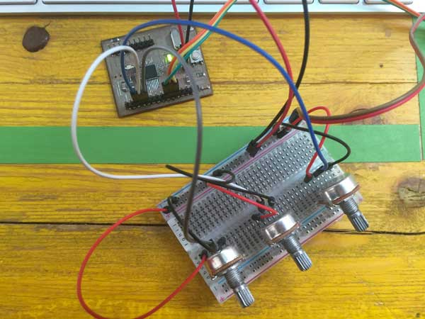
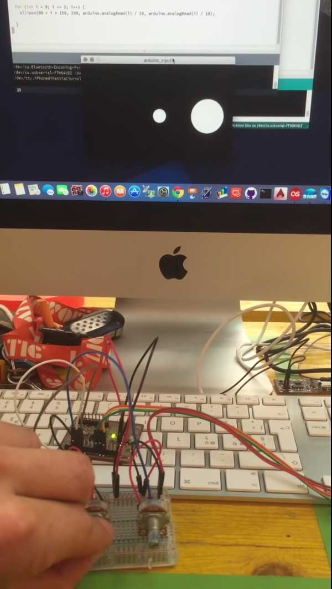
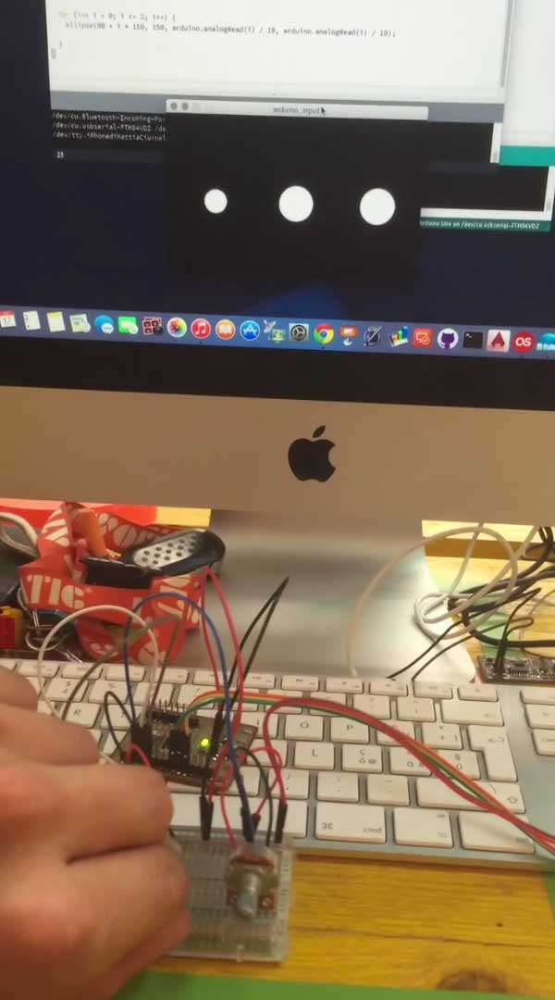
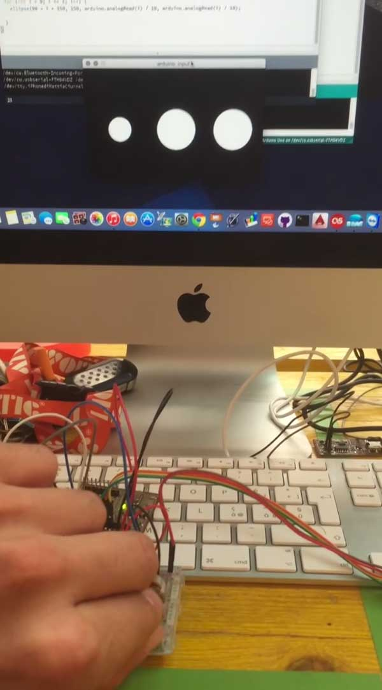
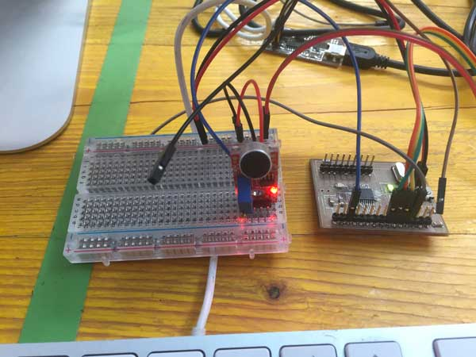
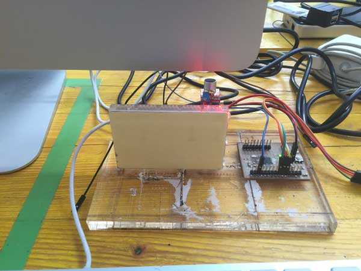
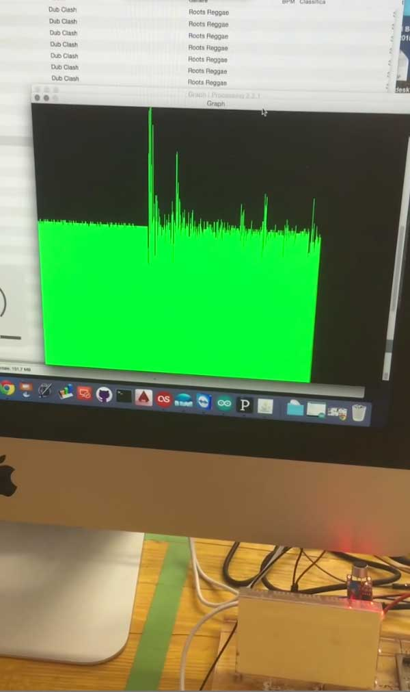
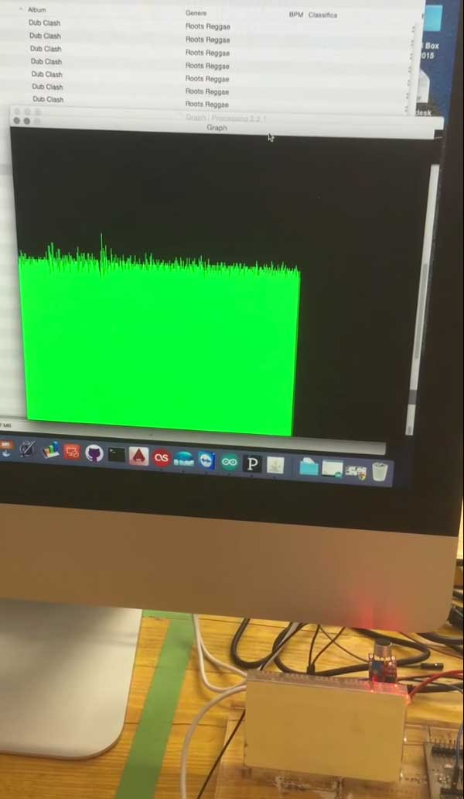

For this week we have to write an application that interfaces with an input and/or output device.
During class on Wednesday, we have seen the various methods for interfacing a microcontroller with the PC, using various tools and programs.
Given my lack of experience in programming, I decided to try Processing, which has an environment similar to the Arduino and it is easy to understand.
First of all I started to take a look at the available libraries for Processing for serial communication with microcotrollori. Processing has, among the standard libraries, the library "Serial": the "Serial" library reads and writes data to and from external devices one byte at a time. It Allows two computers to send and receive data. This library has the flexibility to communicate with custom microcontroller devices and to use them as the input or output to processing programs.
Another useful resource is the library "Firmata" for Arduino (and also for Processing): this library implements the Firmata protocol for communicating with software on the host computer. This allows you to write custom firmware without having to create your own protocol and objects for the programming environment that you are using.
Using these two resources I made a first exercise: I connected 3 potentiometers to analog pins A0, A1 and A2 of the microcontroller and loaded on the example "analogRead" of the library "Firmata" to try then to graphically display their values.

In Processing instead, I modified the example sketch "ArduinoInput" of the library "Firamta" for Processing to display 3 circles, one for each potentiometer, with a radius equal to its value.
So, if you turn one of the potezionziometer, the corresponding circle will change it radius



This is a video of the result:
To experience a little more I tried another simple exercise: see the sound wave through the use of a sound sensor.
To do this I connected to the analog pin A0 of the microcontroller the sound sensor

and I loaded on the microcontroller a simple sketch that prints via serial the sensor value
Instead in Processing I used this program, reading values via serial, returns them by drawing a line of the same size
import processing.serial.*;
Serial myPort;
int xPos = 1;
void setup () {
size(600, 300);
println(Serial.list());
myPort = new Serial(this, "/dev/cu.usbserial-FTH04VDZ", 9600);
myPort.bufferUntil('\n');
background(0);
}
void draw () {
}
void serialEvent (Serial myPort) {
String inString = myPort.readStringUntil('\n');
if (inString != null) {
inString = trim(inString);
float inByte = float(inString);
inByte = map(inByte, 0, 1023, 0, height);
stroke(#21FF2A);
line(xPos, height, xPos, height - inByte*10);
if (xPos >= width) {
xPos = 0;
background(0);
}
else {
xPos++;
}
}
}
Then i placed the sound sensor near the pc speaker

and after started the program in Processing and the music


Here you can see a video of the result: